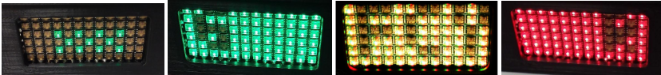

Quick Start Guide
Mount flagging:
Mount flagging box in a suitable location within view of the driver.
Plugin in:
Plug in the main harness cable to the back of the unit, then power the unit with either the USB plug (cigarette lighter adapter) or 12V using the Orange(+) and black(-) wires.
Mount antenna on roof:
Mount antenna on roof of car or on dash with a clear view of the sky and route the cable to the unit. GPS should face the front of the car. Plug in the GPS antenna, located on the right of the unit.
Powering ON
Unit automatically powers on when power is applied, during pit stops there is a battery which can power the unit for up to one hour.
Unit turns off after 30mins if there is no external power.
Hold the top front button for 5 seconds to manually turn off the unit.
Brightness:
Unit has a light sensor to dim the screen at night.
Pushing either front button will cycle through 3 brightness levels.
Pit stops:
Upon entering the pits unit will display the current pit time in the color of the current flag.
After 10 minutes unit will display minutes only
Green Flag:

After 30 seconds of GREEN flag the display will dim and show a green checker pattern to save power. YELLOW and RED remain full screen.